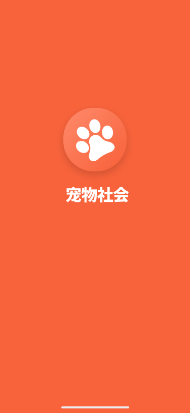

认识它
每只宠物都有自己的身份
把头像、名字、品种和年龄整理成档案，多只宠物也能快速区分。
宠物社交 App · UI 设计
围绕它的日常，
认识更多同路的朋友。
把宠物档案、社区分享与散步记录放在一起，让每一次陪伴都有自己的故事。



除了分享一张照片，
还能怎样记录和它一起的生活？这个项目尝试把宠物资料、生活动态和散步记录连接起来，让宠物成为内容与社交的共同起点。
面向希望记录宠物日常、交流养宠经验的人，设计用照片传递亲近感，用清楚的卡片与导航组织内容，让浏览、分享与日常陪伴自然衔接。
认识它
把头像、名字、品种和年龄整理成档案，多只宠物也能快速区分。
分享它
照片动态、活动和养宠内容，让交流围绕真实的生活片段展开。
陪伴它
用路线、距离、时间和目标进度呈现运动信息，把散步变成可回看的记录。
用明亮的橙色传递活力，以留白与深色文字组织宠物的日常。
橙色引导行动，白色承载照片与内容。悬停或点击色块，查看每种颜色的用途。
#F8633B#FFFFFF#361D1E#CCCCCC#111212Raleway
整体以 Raleway 为主要字体，通过字号区分信息层级，让标题、内容与操作各有位置。
小狗、小猫与爪印建立宠物主题；房屋、相册和收藏等图形说明常用功能。圆润的轮廓与简洁的卡片保持一致。
让宠物成为视觉主角
熟悉的图形，清晰的入口
从认识宠物到分享日常，六个页面展现产品的主要设计。切换查看，长页面可在手机内上下滚动。
用宠物照片建立第一印象，把活动和养宠文章放在清晰的内容分区中，提供继续探索的入口。